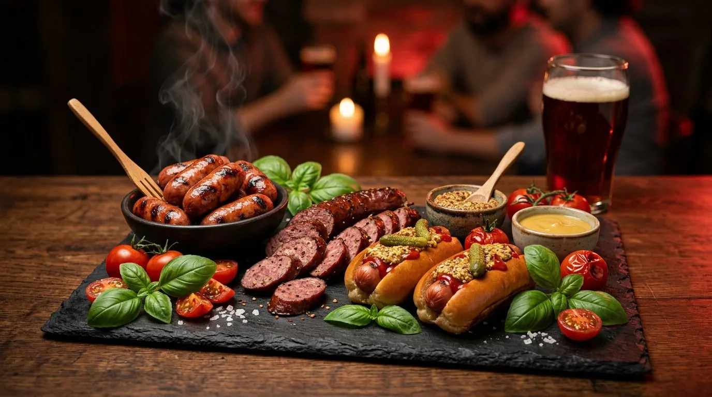
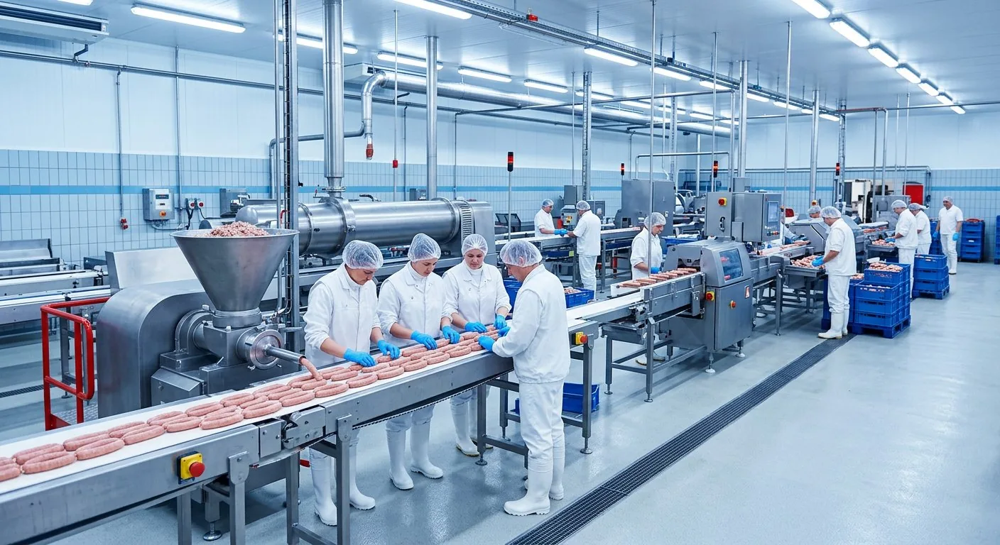
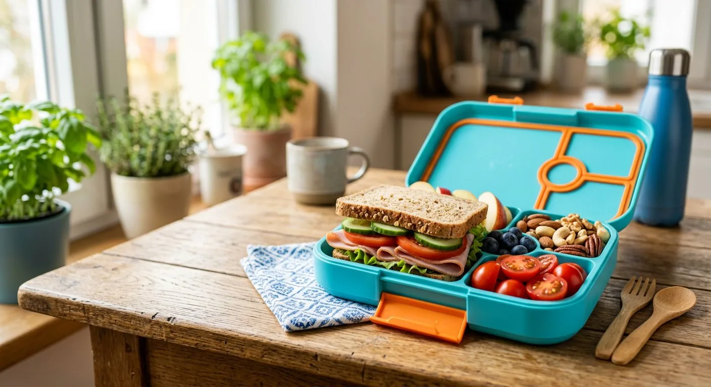
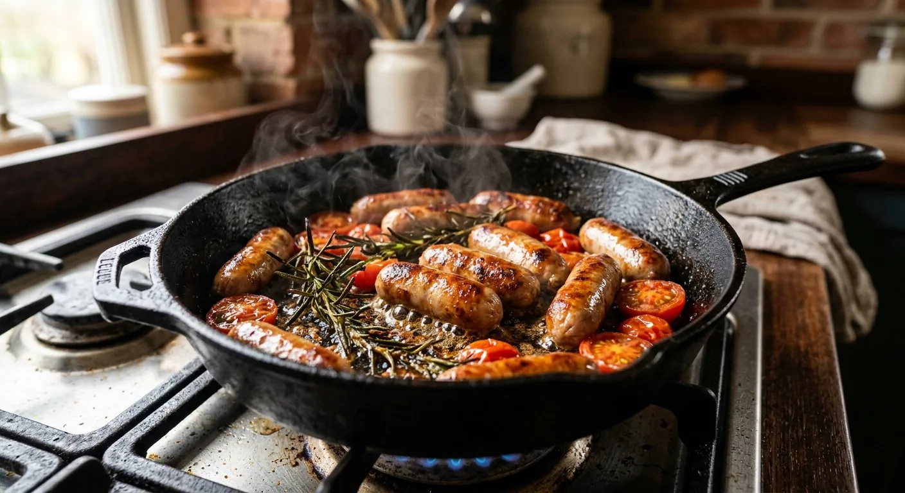

درصد گوشت بالا
استفاده از گوشت تازه و مرغوب با درصد ۴۰ تا ۹۰؛ بالاتر از میانگین بازار و درج شفاف روی بستهبندی.
شرکت بریان گوشت آمل با برند تجاری بریون، تولیدکننده بیش از ۶۱ قلم سوسیس، کالباس، ژامبون، محصولات انجمادی و گیاهی با استانداردهای بینالمللی ISO 22000 و HACCP؛ بدون مواد نگهدارنده مصنوعی.

طیف گستردهای از فرآوردههای گوشتی و گیاهی با درصد گوشت ۴۰ تا ۹۰ درصد، ویژه مصرف خانگی و فودسرویس
از انتخاب گوشت تازه تا بستهبندی بهداشتی، همهچیز با دقت و بر پایه علم روز صنایع گوشتی
استفاده از گوشت تازه و مرغوب با درصد ۴۰ تا ۹۰؛ بالاتر از میانگین بازار و درج شفاف روی بستهبندی.
خطوط تولید پیشرفته اروپایی و کنترل دقیق دما، پخت و دود در تمام مراحل فرآوری.
بدون مواد نگهدارنده مصنوعی؛ بستهبندی وکیوم بهداشتی و پایش میکروبی هر بچ تولید.
دارنده گواهینامههای ISO 9001:2015، ISO 22000:2018، HACCP، GMP و استاندارد ملی ایران.
شبکه پخش مویرگی و نمایندگیهای فعال در سراسر کشور با زنجیره سرد یکپارچه.
سبد محصولات متنوع اقتصادی تا پریمیوم؛ مناسب خانواده، فروشگاه و فودسرویس.

شرکت بریان گوشت در تیرماه ۱۳۸۴ در زمینی به مساحت ۶۰۰۰ مترمربع در فاز دوم شهرک صنعتی آمل با ظرفیت تولید سالانه حدود ۵۰۰۰ تن انواع فرآوردههای گوشتی به بهرهبرداری رسید.
این مجموعه با مشاوره شرکتهای معتبر نظارت و ارزیابی، موفق به اخذ گواهینامههای کنترل کیفیت ملی و بینالمللی شده و با تیمی متخصص، سهمی شایسته در اصلاح فرهنگ مصرف پروتئین کشور دارد.
محبوبترین محصولات بریون در فروشگاهها و فودسرویسهای سراسر کشور
دانستنیهای کاربردی درباره فرآوردههای گوشتی، آشپزی و تغذیه سالم

۱۴۰۵/۰۶/۱۷ایدههای سریع و مقوی برای میانوعده مدرسه با ترکیب ژامبون استاندارد، سبزیجات تازه و نان کامل.
ادامه مطلب
۱۴۰۵/۰۵/۲۶پاسخ علمی به پرتکرارترین پرسش مصرفکنندگان درباره انواع سوسیس پخته، دودی و نحوه مصرف صحیح.
ادامه مطلب ۱۴۰۵/۰۵/۰۶
۱۴۰۵/۰۵/۰۶
از انتخاب برگر با درصد گوشت بالا تا رازهای پخت آبدار؛ همه آنچه برای یک برگر عالی لازم است.
ادامه مطلب